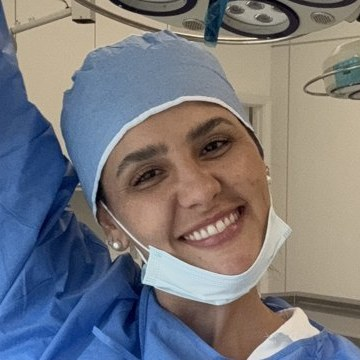
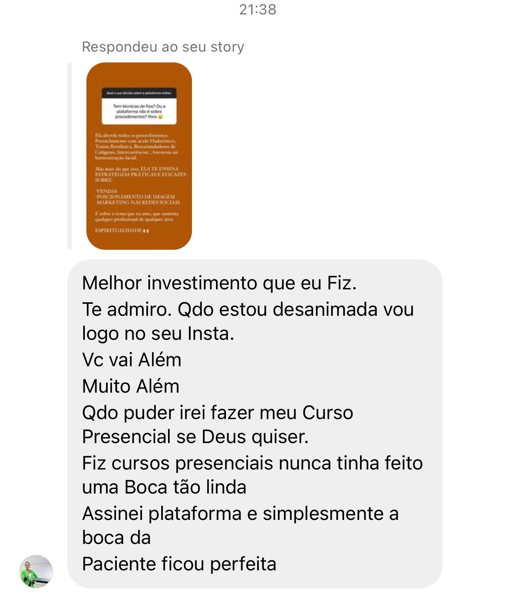
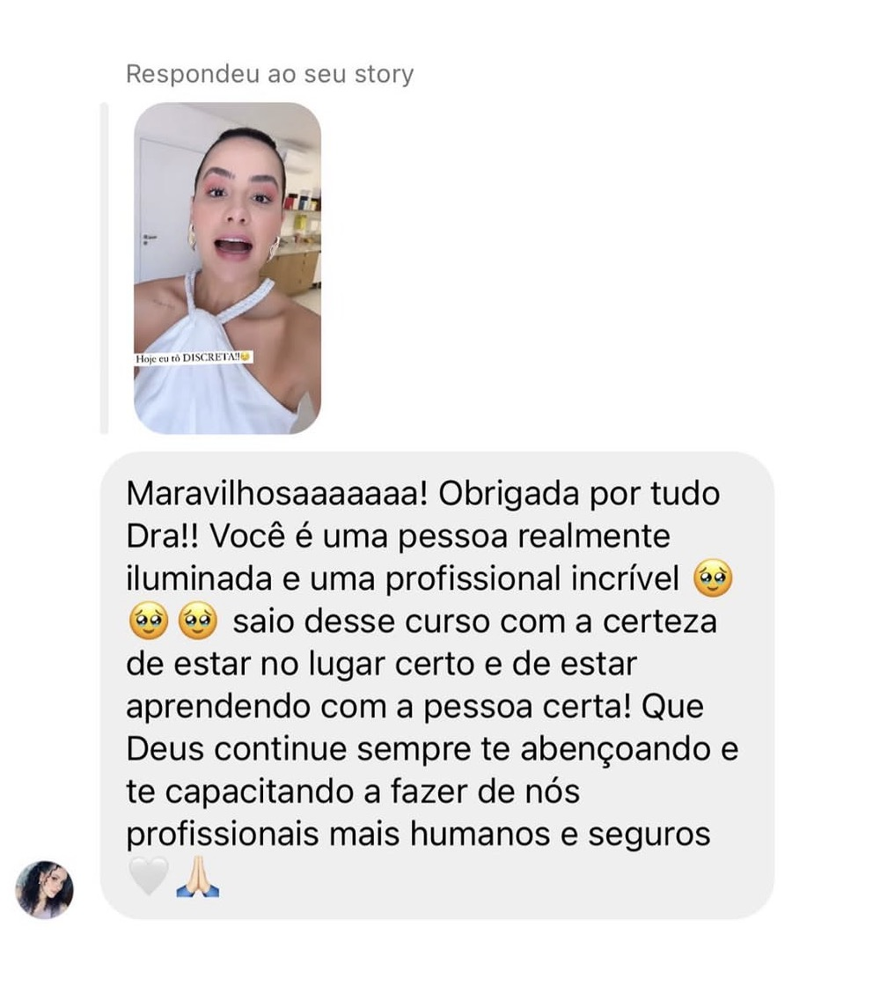

No dia 6, ao vivo, a Dra. Aline Filgueiras te mostra o que muda a sua segurança na cadeira. Você leva isso pro consultório já na semana seguinte.
Na aula ao vivo, a Dra. Aline mostra por que cada rosto responde de um jeito, pra você aplicar sabendo o resultado que vai entregar.

Com a Dra. Aline Filgueiras: 11+ anos de clínica e mais de 1.000 alunas formadas.
Dia 6/10, ao vivo: a Dra. Aline mostra os limites que fazem o medo de intercorrência dar lugar à segurança na cadeira.


Você sai com a mão mais firme e resultados mais previsíveis em cada rosto.
Ao vivo, uma vez só, sem replay.
Inscrições encerram às 20h do dia 6. Poucas vagas.